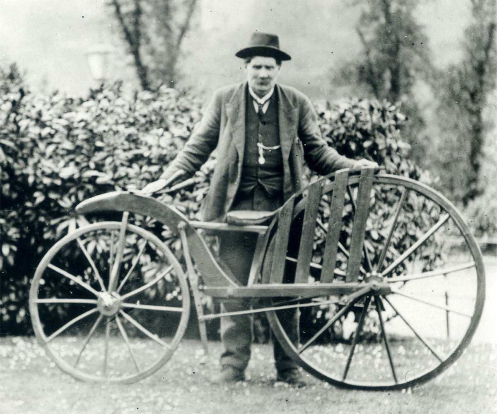
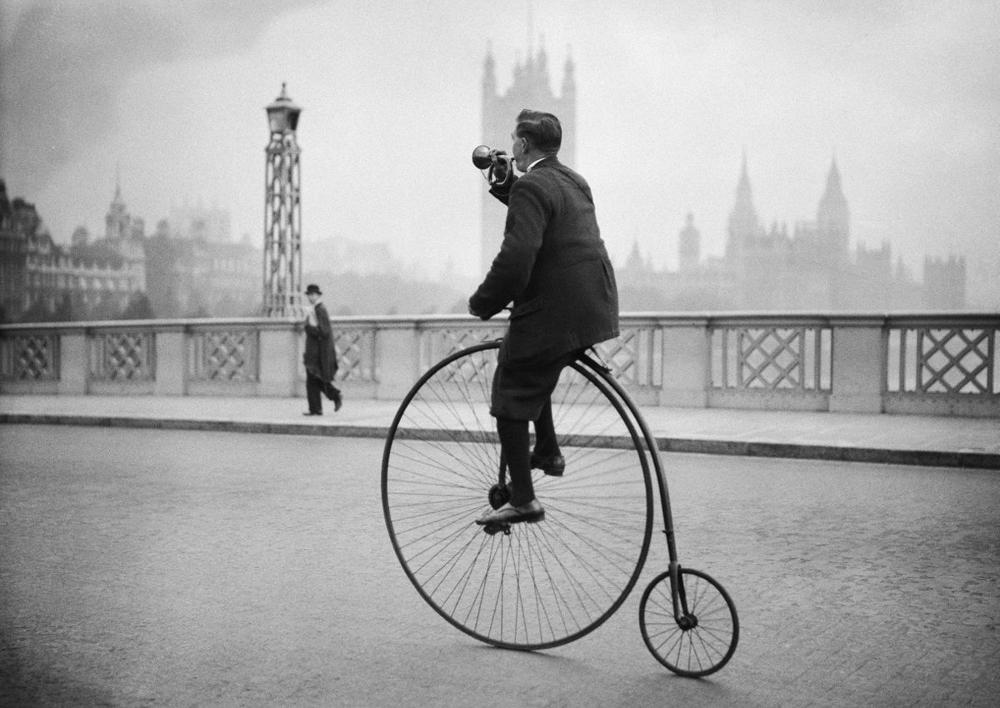
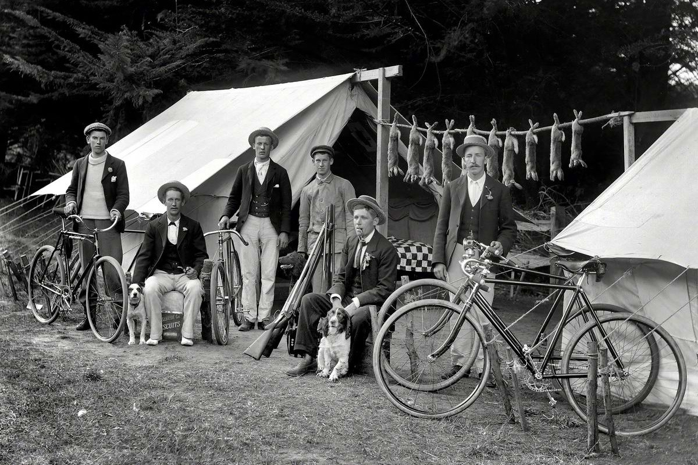

В 1808 році у Парижі з'явився перший велосипед з двома колесами, але без руля та педалів. Його назвали "беговел" .
Саме цю конструкцію першого велосипеда допрацював Дрез, створивши "самокат Дреза".
В середині дев'ятнадцятого сторіччя з'являється такий механізм, як привід від педалів.
В 1862 році 19-річний француз П'єр Лалман, прагнучи створити дитячий візочок, випадково створив велосипед.
Перебравшись до Америки, Лалман запатентував свій винахід та запустив у массове виробництво. Цей велосипед,
не дивлячись на наявність ресор, все одно отримав назву "костотряс".
З'являються велосипеди по схемі Penny-farthing
Велосипеди нарешті стають схожими на сучасні, але попереду вже було і буде ще багато модифікацій цього геніального винаходу.
 Контактні дані:Адреса: м.Одеса, вул. Дерибасівська 51
Поштова адреса: bikes@gmail.com